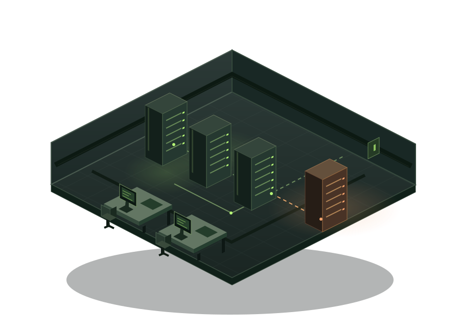

Build your startup
Start with an app and a database. Pick upgrades without burning through your budget.
For NUS Computing students
A system-design tycoon where you grow a startup, survive traffic spikes, and put your architecture to the test.
Play the prototypeFree to try · No download

You're the tech lead. Keep your startup running as traffic grows and your budget gets tighter.
Start with an app and a database. Pick upgrades without burning through your budget.
Your app takes off. Find the bottleneck before slow requests become an outage.
Watch your decisions change the system. Take what you learn into the next run.
Try a choice. See why adding more servers isn't always the answer.
Illustrative example: read-heavy traffic, after upgrades take effect.
Choose an upgrade to see what happens.
No. Basic web-development knowledge is enough. Explore how scaling, caching, and databases work together by seeing the consequences of your choices.
Open the free prototype in your browser and press Play. A laptop or desktop works best. There's nothing to install.
It's an early prototype by CS3216 Group 5. We're testing the core gameplay and improving it with player feedback.
Play a run. See what breaks. Figure out your next move.
Play the prototype